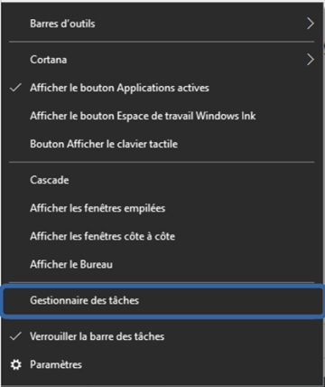
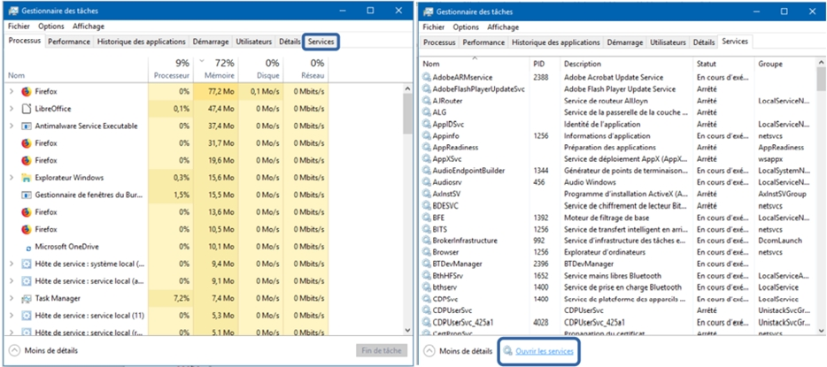
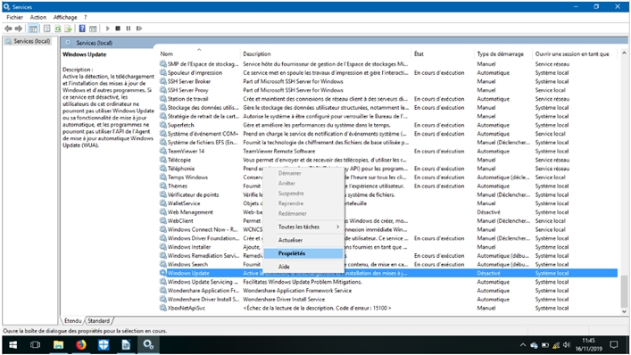
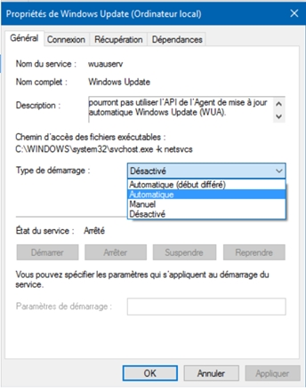

Si c’est votre 1ère mise à jour, votre ordinateur n’est pas correctement configuré et Windows Update est désactivé. Ce problème peut vous empêcher de mettre à jour Windows (10 ou antérieure) et accéder au Windows Store (Windows 8.1 et 10).
Si ce n’est pas la première fois que vous installez une mise à jour, désactivez Wub si vous l’avez installé ou réactivez Windows Update (suivre le indications ci-dessous).
Etape 1 : Sur la barre des taches, faites clic droit, puis gestionnaire des tâches.
Etape 2 : Sélectionnez l’onglet services, puis ouvrir les services
Etape 3 : Recherchez Windows Update, faites clic droit dessus, puis Propriété.
Etape 4 : Dans, type de démarrage, sélectionnez Automatique, enfin, valider avec OK.
Réessayer de mettre à jour Windows, si cela fonctionne, vous avez réussi.
Si le problème persiste, essayez de mettre à jour Windows 10 manuellement en cliquant sur le lien donné plus haut. Pensez à faire une sauvegarde de vos données.